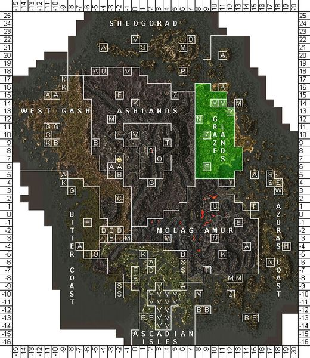
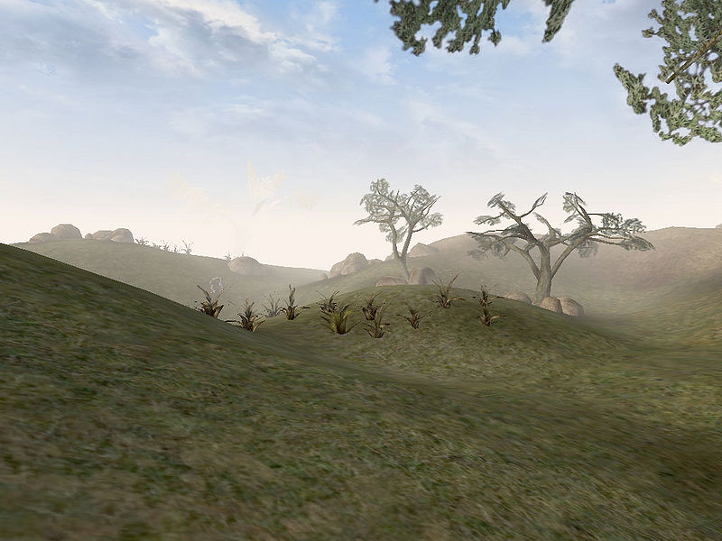
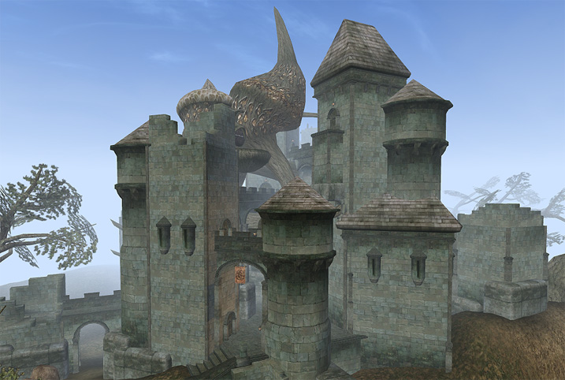

|
 Map of the Grazelands |
|
 A typical scene in the Grazelands |
|
 The tower of Tel Vos |
The Grazelands (also called Sunna Guradan or the Telvanni Grazelands) are the pastoral heartland of Vvardenfell. On the northeastern corner of the island, these grasslands extend from the ancient stronghold of Falensarano north to the coast above Tel Vos. To the east, the Grazelands stretch to the coast and the islands of Zafirbel Bay, facing the Telvanni Peninsula. To the west, it is bounded by the forbidding steepness of the mountains of the Ashlands.
The flora of the Grazelands is dominated by wickwheat, and this is one of the few areas where it grows. There are trees spread sporadically around the landscape. Stoneflower is the most frequently flowering plant. It is home to wild guar, alit and shalk. The south is dominated by hackle-lo shrubs, whose leaves can be found across the island. It is also a region where, due to its scarce population, it is not uncommon to see Daedra, including golden saints and ogrim, just walking around in the open.
Much of Grazelands is uninhabited and thus belongs to the Temple. The population of the Grazelands consist of mostly nomadic Ashlanders. Other inhabitants include those who live in Tel Vos and the nearby town of Vos, along with Master Aryon in the tower of Telvanni.
Ashlander settlements in the area are the Ahemmusa Camp in the north and the Zainab Camp to the south. Presence of Tel Vos and the proximity to the Telvanni homeland means that this House is the most likely to make future claims in the region.
There are relatively few ruins in this region. The only significant Dwemer site is the fabled Nchuleft, and the only Daedric ruin is Kushtashpi in the far north. Dunmer strongholds include Falensarano in the south, and Indoranyon, in the central east, near the coast. They are both worth investigating, but be wary of Daedra worshippers and Bandits.